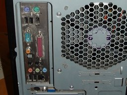
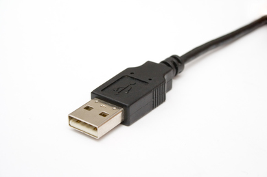
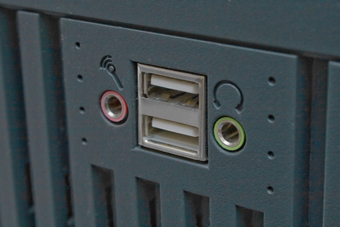

Tutorial - Connecting Up
Contents
Identifying the sound ports on your computer
First of all you need to know the sound input capabilities of your computer.
PCs - Windows and Linux
Most desktop PCs (Windows and Linux) will have sound ports on the back of the computer similar to these illustrations.
|  | ||
| The rear of a typical PC | The color-coded jacks on the soundcard |
The pink port is normally the microphone input, and is usually mono but might be stereo. The light blue port is normally the line input port and is usually stereo. The green port is normally the headphone output port, also usually stereo. Check your computer manual to be sure.
PC laptops vary widely in the types of sound input and output ports they provide, where they are on the laptop, and how they are labeled. Many modern laptops do not have a line input at all. Again, check your computer manual to be sure of the capabilities of your laptop, where the ports are and how they are labeled.
Mic In
Generally the Mic In port on a computer is only meant to have a small computer microphone plugged into it. If you have a microphone with an 1/8" (3.5mm) 3-conductor jack plug, it will probably work if plugged into this port.
Line In
The Line In port is the highest quality input available on most soundcards (like the one pictured above). It expects to have a Line level signal plugged into it, this is the same level used by most consumer-oriented audio equipment. Equipment such as tape decks, record players, MiniDisc players, Video Game Systems and so on should be plugged into this port.
Macs
Macs do not generally have a microphone input port.
| Audio connections on a PowerBook | Audio connections on an iMac |
In these illustrations of sound ports on Macs, the round port with the headphone symbol is the Line Output port. The round port beside the headphone port is the line input port.
Other Macs (Mini, Mac Pro, MacBook and MacBook Pro) are similarly equipped. Check your manual for the locations and labeling of these ports.
USB devices
For better audio quality, many people use an USB audio device. If you have such a device, attach your microphone and speakers to that device, and plug the device into your computer's USB port.

USB Cable and Plug
USB Ports
Connecting a microphone, keyboard, guitar or mixer to your computer
Please click on the following links apropriate to the input device or instrument you wish to connect:
Testing your input connection
Before you fire up Audacity you should use your computer's sound control panel or the custom mixer application for your specific soundcard, select the input device you want to use and verify that you are getting sound into the computer from that device.
Once you have verified that you are getting sound into the computer you can move on to getting that sound into Audacity.
If you are having trouble getting sound into Audacity there's lots of help available on the Audacity Wiki.
Links